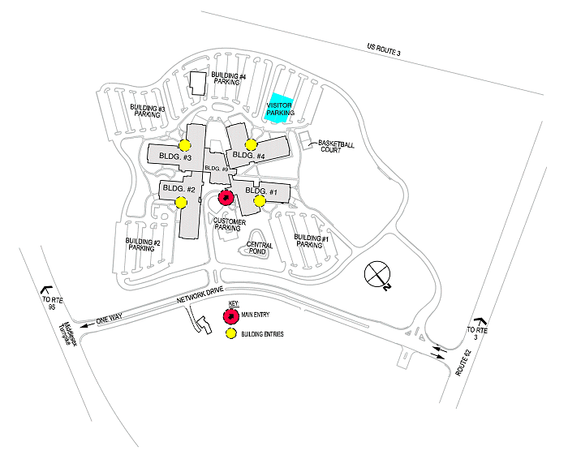
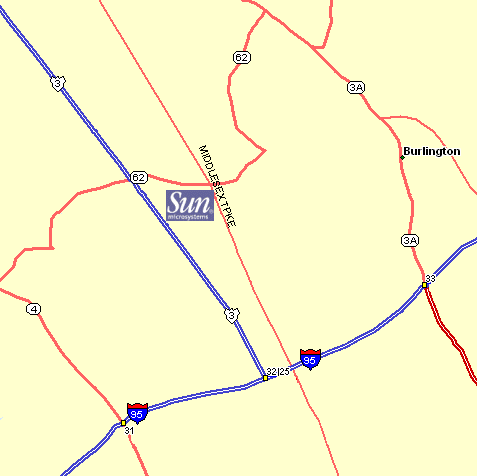

Sun Burlington Campus

Directions to the Sun Burlington Campus

FROM LOGAN TO SUN BURLINGTON CAMPUS:
Exit Logan headed to downtown Boston: Go through Sumner Tunnel and look
for I-93N. Take that to
128/95S exit 37B. Drive on 128/95S to Exit 32B for RT. 3N/Middlesex Turnpike
exit. From the exit ramp,
go on Rt 3N (not on Middlesex Turpike). From Rt 3N take the first exit
(which is Rt 62 - Bedford Ave). On
Rt 62, Take the second right into Network Drive. Be aware of construction
work at that intersection. Go to
SUN's main lobby and call your host.
FROM LOGAN TO WYNDHAM GARDEN HOTEL (30 WHEELER RD, 781 272-8800)
Exit Logan headed to downtown Boston: Go through Sumner Tunnel and look
for I-93N. Take that to
128/95S exit 37B. Drive on 128/95S to Exit 32B for RT. 3N/Middlesex Turnpike
exit. Go on to Middlesex
Turnpike (not Rt 3N). Take a left at end of exit ramp onto Middlesex Turnpike.
Take the next left onto
Wheeler Ave (store Tweeter at corner). Wyndham is 200 feet on the left.
FROM 495 OR ROUTE 3 N
Coming from 495 N or S, take Route 3 S (Exit 35A. Then Take exit 26 (RT.
62). At the end of the ramp,
take a left you will pass two set of lights, and on your third set of lights,
take that right onto Network
Drive.
FROM WYNDHAM GARDEN HOTEL TO SUN BURLINGTON:
2 ways:
#1: Go from Wheeler to Middlesex Turnpike. Take a right. Go
for ~2 miles. Pass Rt 128/95. Pass Burlington Mall on right. Take a left
onto Rt 62 (Bedford Ave). Take the next left onto Network Drive. Be aware
of construction work at that intersection. Go to SUN's main lobby and call
your host.
#2: Take the hotel shuttle. Need to reserve ahead of the time.
FROM BURLINGTON MALL TO SUN BURLINGTON:
Come out of the mall and take a right onto Milddlesex Turnpike. Go for
~2 miles. Take a left onto Rt 62
(Bedford Ave). Take the next left onto Network Drive. Be aware of construction
work at that intersection.
Go to SUN's main lobby and call your host.
FROM MARRIOTT HOTEL-1 MALL RD.
Start out going east on Burlington Mall Rd. Towards Cambridge St.. Turn
left onto Cambridge St. (1mile
down) And then turn left onto Bedford Street. You will see a slight intersection
stay to the right, the
second slight intersection stay to the right, Then finally another intersection
stay to the left until you see
a set of lights. Go straight until you see a mobile gas station take a
left, take that left at the lights onto
Network Drive.
FROM SUMMERFIELD SUITES HOTELS-2 VAN DE GRAFF DRIVE
Start out going NE on Van De Graff Drive towards S Bedford St. Turn left
onto S Bedford St. S. Bedford St.
becomes an unamed Rd. Then turn left to Burlington Mall Rd.. Burlington
Mall Rd. becomes Lexington
Street. Turn right onto Middlesex Turnpike turn left onto Bedford Street.
You will see a Mobile Gas
Station take the next left at the lights to Network Drive.
TO LOGAN FROM SUN BURLINGTON
From campus, take left onto Network Drive. Take left onto Rt
62. Look for entrance to Rt 3S and enter it. Rt 3S merges (bear left) into
Rt 128/95N. Take 95N to 93S (in Woburn). Take 93S to Logan airport exit
in Boston. Take left at end of exit ramp and enter the tunnel. Bear right
to enter the airport after the tunnel.
Hotels
Numerious hotels are available within a few miles of the Sun Campus. Most
hotels located in the towns of Burlington, Bedford, Lexington, and Woburn
are quite convenient. Several hotels provide complementary shuttle service.
To speed the search for hotels that meet your requirements the Burlington
zipcode is 01803.
Boston Marriott Burlington
Rt 128 & 3A (One Mall Road)
Burlington, MA 01803 USA
Phone: 1-781-229-6565
Fax: 1-781-229-7973
Web: Burlington Marriott
Fairfield Inn Boston
285 Mishawum Road
Woburn, MA 01801, USA
Phone: 1-800-228-2800, +1 781-938-7575
Fax: 1-781-937-0623
WEB: Fairfield Inn Woburn
Summerfield Suites Burlington
2 Van de Graaff Drive
Burlington, Massachusetts 01803, USA
Phone: +1 781-270-0800
Reservations: 800-695-8284
Fax: 781-279-5554
Web: Summerfield Suites
Homewood Suites Billerica
35 Middlesex Trunpike
Bedford, MA
Phone: +1 978-670-7111
FAX: +1 978-670-1166
Wyndham Hotel - Billerica
270 Concord Road
Billerica, MA
Phone: +1 978-670-7500
FAX: +1 978-670-8898